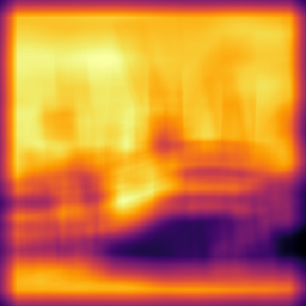
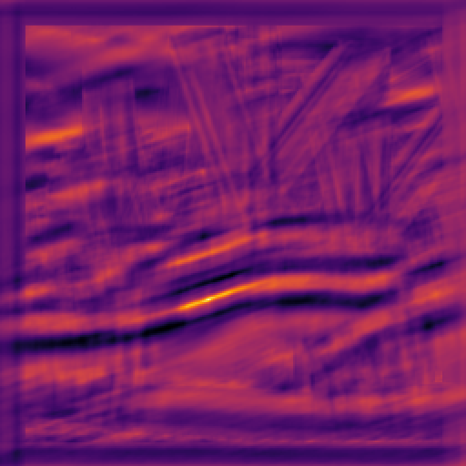
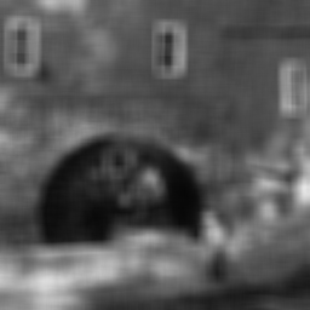
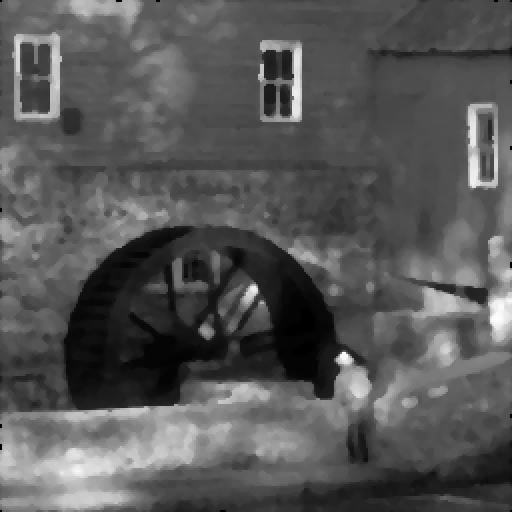
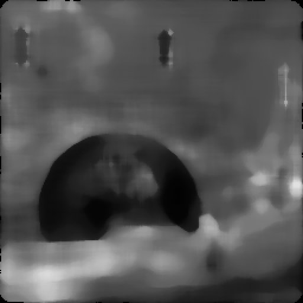

visión por computador · sjk002 · lección 002
Filtrado espacial lineal y no lineal
Convolución, correlación, ruido, suavizado y filtros de orden.
punto de partida
La imagen es una matriz
Una imagen en grises es una función discreta de dos índices (cada celda es la intensidad de un píxel):
Filtrar es aplicar un sistema \(\mathcal{T}\) que transforma una imagen en otra:
En NumPy: f[n, m] es la fila n y la columna m. Ojo: en las diapositivas del curso n es horizontal; en NumPy el primer índice es la fila.
matriz 4×4 de ejemplo: un borde vertical entre las columnas 1 y 2
definición
Sistema lineal
Forma general: cada salida es una combinación con pesos \(h\) de todas las entradas (salida = pesos · entrada).
Definición por superposición: la salida de una mezcla es la mezcla de las salidas. Contiene dos propiedades: homogeneidad (\(\mathcal{T}(af)=a\mathcal{T}f\)) y aditividad.
ejercicio de la diapositiva 7
¿Cuáles son lineales?
| sistema | ¿lineal? | por qué |
|---|---|---|
| media local | sí | suma ponderada |
| mediana | no | ordena (contraejemplo) |
| \(g=f^2\) | no | \((2f)^2\neq 2f^2\) |
| \(g=f+5\) | no | afín: \(\mathcal{T}(0)=5\) |
| umbral | no | \(\mathcal{T}(2f)\neq2\mathcal{T}(f)\) |
| traslación | sí | reordena píxeles |
rgb2gray y desenfoque. Solo el desenfoque es además invariante a traslación (LTI).demostración por contraejemplo
La mediana no es lineal
linealidad + invariancia a traslación
Sistemas LTI
Todos los píxeles se procesan igual, sin importar dónde estén: \(h\) es un único núcleo pequeño.
no confundir
Equivarianza e invariancia
invariancia
La salida no cambia al trasladar la entrada. Ejemplo: un clasificador «¿hay un gato?».
equivarianza
La salida se traslada igual que la entrada. Ejemplo: un detector de bordes.
Por los dos caminos se llega a la misma imagen.
ejemplo de la diapositiva 10
Un sistema LTI: media 5×5
- Lineal: suma ponderada de entradas.
- Invariante: el peso \(1/25\) no depende de \((n,m)\).
- Pesos que suman \(25\cdot\tfrac1{25}=1\): conserva el brillo medio.
- Núcleo cuadrado y simétrico: correlación y convolución dan lo mismo.
núcleo \(h[k,l]=1/25=0{,}04\)
bloque b
Convolución y correlación
Dos formas de deslizar un núcleo: girarlo o no girarlo.
las dos operaciones
Convolución y correlación
convolución
El núcleo se gira 180° antes de deslizarlo.
correlación
El núcleo se desliza sin girar.
h (de ejemplo)
180°
→
h[−k, −l]
Mismo núcleo \(h\): convolucionar con \(h\) es correlar con \(h\) girado 180° (invertir filas y columnas: h[::-1, ::-1]).
convolve y correlate.ejemplo numérico · datos de ejemplo
Convolución paso a paso
mismo núcleo · mismos datos de ejemplo
Correlación paso a paso
celda central (2,2) · datos de ejemplo
Una celda, a mano
W en (2,2)
h
h girado 180°
Correlación: \(W\odot h\). Convolución: \(W\odot h_{180}\). Se multiplica casilla a casilla y se suma.
scipy.ndimage)por qué h es la «respuesta al impulso»
Respuesta al impulso
Convolución: \(\delta\ast h=h\). Devuelve el núcleo tal cual.
Correlación: \(\delta\star h=h[-k,-l]\). Devuelve el núcleo girado 180°.
Por eso a \(h\) se le llama respuesta al impulso: es lo que produce el sistema ante un único píxel encendido.
conmutatividad y asociatividad
Propiedades
| propiedad | convolución | correlación |
|---|---|---|
| conmutativa \(f\ast h=h\ast f\) | sí | no |
| asociativa \((f\ast h_1)\ast h_2=f\ast(h_1\ast h_2)\) | sí | no |
| con núcleo de simetría central | sí, igual a la correlación | sí, igual a la convolución |
ejercicio 1 del examen
Máscara simétrica
máscara \(h\) del examen
convolve o correlatediapositivas 13–14 · imagen real boat256
Template matching


La correlación responde fuerte donde la imagen se parece al patrón, pero sin normalizar el producto escalar también crece con el brillo local: gana una zona clara cualquiera. Hay que restar la media y dividir por la norma (skimage.feature.match_template).
diapositiva 15
¿Qué es una convolución?
| transformación | ¿convolución? | núcleo / motivo |
|---|---|---|
| traslación | sí | impulso desplazado |
| escalado de intensidad \(af\) | sí | impulso por \(a\) |
| media local | sí | \(\mathbf{1}/(mn)\) |
| desenfoque | sí | núcleo gaussiano |
| rotación de la imagen | no | no es invariante a traslación |
| \(f^2\) | no | no es lineal |
núcleo de la traslación + escalado
Criterio: es convolución si y solo si es lineal e invariante a traslación.
La rotación es lineal, pero cada píxel se procesa con pesos distintos según su posición.
bloque c
Bordes de la imagen
Qué valores lee el núcleo fuera de la imagen, y la trampa del dtype.
scipy.ndimage.convolve(input, weights, mode=…)
Modos de borde
Los cuatro valores a cada lado se leen fuera de la imagen \(a\,b\,c\,d\). Con mode='constant', k es cval (0 por defecto). El modo por defecto es reflect.
reflect repite el píxel del borde (a a); mirror no lo repite (b a b).ficha de función
scipy.ndimage.convolve
| parámetro | qué es | valor típico / trampa |
|---|---|---|
| input | imagen (array n-D) | conviértela a float |
| weights | núcleo, misma dimensión que input | 2D: np.ones((n,n))/n**2 |
| output | array o dtype de salida | si es None: mismo dtype que input |
| mode | tratamiento del borde | 'reflect' (defecto), 'constant', 'nearest'… |
| cval | valor de relleno para 'constant' | 0.0 |
| origin | desplaza el centro del núcleo | 0 = centrado |
correlate tiene la misma firma: solo cambia que no gira el núcleo.error típico
Trampa del dtype uint8
im = np.array([[10,200,10]]*3, np.uint8) k = np.array([[1,0,-1]]*3) convolve(im, k) # [[ 58 0 198] <- ¡desborda! # ...] convolve(im.astype(float), k) # [[ 570. 0. -570.] # ...]
uint8: \(570 \bmod 256 = 58\) y \(-570 \bmod 256 = 198\). Con núcleos con valores negativos (bordes) el resultado es basura.convolve(im.astype(float), k), o pasa output=float.bloque d
Ruido
Gaussiano frente a impulsivo, y el modelo de degradación.
dos modelos de la lección
Ruido gaussiano e impulsivo
Gaussiano, aditivo: \(g=f+\eta\). Lo causa el sensor y la temperatura.
Impulsivo (sal y pimienta): \(a=0\) (pimienta, prob. \(P_a\)) y \(b=L-1\) (sal, prob. \(P_b\)).
restauración
Modelo de degradación
Si solo hay ruido (\(h=\delta\)), la herramienta de restauración es el filtrado espacial: se estima \(\hat f\) a partir de \(g\) con una ventana alrededor de cada píxel.
imagen real arch256
Ruido gaussiano real
Ruido aditivo \(g=\operatorname{clip}(f+\eta)\) con \(\eta\sim\mathcal{N}(0,\sigma^2)\), recortado a [0, 255]. Todos los píxeles cambian un poco.
imagen real arch256
Sal y pimienta real
Pocos píxeles se alteran, pero cada uno se pone a 0 o a 255 con probabilidad 1/2. Valores extremos: se llaman outliers.
bloque e
Suavizado lineal
Media y gaussiano: convoluciones, separabilidad y coste.
filtro lineal de suavizado
Media aritmética
def averageFilter(im, n):
mask = np.ones((n, n)) / n**2 # suma = 1
return convolve(im, mask)
¿Por qué suman 1 los pesos? Si la zona es constante, \(g=c\): la salida es \(\tfrac{1}{mn}\cdot mn\cdot c=c\). Se conserva el brillo medio.
núcleo 3×3: \(1/9\approx0{,}11\)
Otras medias (solo citadas): geométrica, armónica y contraarmónica.
peso decreciente con la distancia
Filtro gaussiano
A la derecha, la aproximación entera con \(\sigma=1\) de la diapositiva 24 (5×5, normalizada a suma 1).
\(\dfrac{1}{273}\times\) esta matriz (la suma es 273)
cuánto núcleo hace falta
Tamaño del gaussiano
Más allá de \(3\sigma\) los pesos son despreciables (\(\approx1\) % del máximo).
from scipy.ndimage import gaussian_filter out = gaussian_filter(im, sigma) # truncate=4.0 por defecto: r = int(4.0*sigma + 0.5) n = 2*r + 1 # sigma=1 -> 9 pesos
imagen real arch256 · ruido gaussiano σ = 20
Media frente a gaussiano

Los dos reducen el grano. Cuanto mayor es la ventana, más se emborronan los bordes (11×11). El gaussiano pesa más el centro: suaviza sin el artefacto «cuadrado» de la media.
demostración completa
La gaussiana es separable
para escribirlo a mano
Separable en código
from scipy.signal.windows import gaussian
from scipy.ndimage import convolve
def gaussianFilterSep(im, sigma):
n = 2*int(3*sigma) + 1 # ~6σ
gv = gaussian(n, sigma).reshape(n, 1)
gv /= gv.sum() # suma 1
im = im.astype(float)
tmp = convolve(im, gv) # columna
return convolve(tmp, gv.T) # fila
Dos pasadas 1D (columna y luego fila) dan lo mismo que una 2D con \(G=g_v\,g_v^T\), por la asociatividad.
La media también es separable: np.outer(np.ones(n)/n, np.ones(n)/n).
gv debe ser 2D (n×1) para ndimage.convolve: weights tiene que tener las mismas dimensiones que la imagen.implicación práctica
Coste: 2D frente a separable
| método | operaciones | 512², 15×15 |
|---|---|---|
| núcleo 2D | \(MN\,mn\) | 58 982 400 |
| dos pasadas 1D | \(MN\,(m+n)\) | 7 864 320 |
La ganancia crece con el tamaño: \(n^2\) frente a \(2n\), es decir \(n/2\) veces menos operaciones.
criterio algebraico
Núcleo separable = rango 1
np.linalg.matrix_rank(H) == 1 # u, v: columna y fila del filtro # H = np.outer(u, v)
Ejemplo, el Sobel horizontal:
bloque f
Filtros de orden
Mediana, mínimo y máximo: no lineales y robustos a los outliers.
ventana 3×3 con un valor atípico · datos de ejemplo
Filtros de orden
El 255 arrastra a la media; a la mediana no.
| orden | 0 | 10 | 10 | 11 | 11 | 12 | 12 | 13 | 255 |
|---|---|---|---|---|---|---|---|---|---|
| pos. | 1 | 2 | 3 | 4 | 5 | 6 | 7 | 8 | 9 |
| filtro | valor |
|---|---|
| mínimo | 0 |
| máximo | 255 |
| mediana (5.º) | 11 |
| punto medio \((\min+\max)/2\) | 127,5 |
medfilt2d o median_filter.señal 1D de ejemplo: borde + sal + pimienta
Perfil 1D: media y mediana
Media 3: cada impulso se convierte en una meseta de 3 píxeles (112 y 133) y el borde se vuelve una rampa (93, 147).
Mediana 3: los impulsos desaparecen y el borde sigue siendo un escalón limpio.
imagen real arch256 con 10 % de ruido
Mediana frente a S&P


La mediana elimina los outliers (no los reparte, como la media). Una pasada deja restos con 10 %; tres casi todo. Una ventana grande emborrona y borra detalle fino.
imagen real arch256 con 5 % de ruido
Máximo y mínimo
Cada filtro elimina el extremo contrario, pero también borra los píxeles negros (con el máximo) o blancos (con el mínimo) verdaderos, y agranda los claros u oscuros.
ejercicio 1 del lab 2
Tabla ruido × filtro
| filtro | gaussiano | sal y pimienta | solo sal | solo pimienta |
|---|---|---|---|---|
| media | sí: reduce | no: reparte impulsos | no: manchas claras | no: manchas oscuras |
| gaussiano | sí: reduce | poco: manchas | poco: manchas | poco: manchas |
| mediana | algo: emborrona bordes | sí: elimina | sí: elimina | sí: elimina |
| mínimo | no: oscurece | no: agranda pimienta | sí: quita sal | no: agranda pimienta |
| máximo | no: aclara | no: agranda sal | no: agranda sal | sí: quita pimienta |
Resumen cualitativo; para cuantificarlo se usa el PSNR de la imagen filtrada frente a la original.
imagen real arch256 · PSNR en dB (más es mejor)
La tabla, medida en PSNR
σ=20S&P
10 %sal
5 %pim.
5 %
Gaussiano: media y gaussiano ganan unos 3,5 dB. Impulsos: la mediana es la mejor en las tres columnas.
bloque g
Repaso final
Chuleta y verdadero o falso.
para el examen
Chuleta
convolve(im.astype(float), np.ones((n,n))/n**2) gaussian_filter(im, sigma) # truncate=4.0 medfilt2d(im, n) # n impar
| situación | qué usar / recordar |
|---|---|
| ruido gaussiano | media o gaussiano |
| sal y pimienta | mediana |
| solo sal / solo pimienta | mínimo / máximo (mejor la mediana) |
| ¿es convolución? | lineal + invariante a traslación |
| ¿no lineal? | un contraejemplo basta |
| bordes en SciPy | mode='reflect' por defecto |
imagen uint8 | pasa a float antes de filtrar |
práctica
Verdadero o falso
| afirmación | respuesta | por qué |
|---|---|---|
| La mediana es lineal. | falso | contraejemplo (1,2,9)+(5,0,0) |
| conv = corr si el núcleo es simétrico respecto al centro. | verdadero | \(h=h_{180}\) |
| El gaussiano es separable. | verdadero | \(e^{a+b}=e^ae^b\) |
| Aplicar dos 1D cuesta \(MN(m+n)\). | verdadero | frente a \(MN\,mn\) |
| El filtro de media es eficaz contra sal y pimienta. | falso | emborrona y extiende los impulsos |
| La convolución es invariante a la traslación. | falso | es equivariante |
| El máximo 3×3 siempre mejora una imagen con pimienta. | falso | quita la pimienta, pero el PSNR puede bajar |